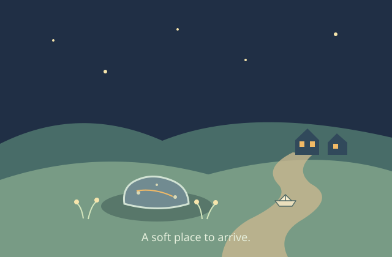

A Soft Place to Arrive

The sky pebble arrived without a sound anyone could hear. The grass bent, a flower nodded, and a little hollow made room.
Farther up the path, two windows glowed. The pebble had crossed more darkness than it could count, but it had never seen a light quite like those. It settled in to watch them, while the stars took their places overhead.
By morning the dew would find it. For now, the path and the windows were enough.
Return to The Night Window